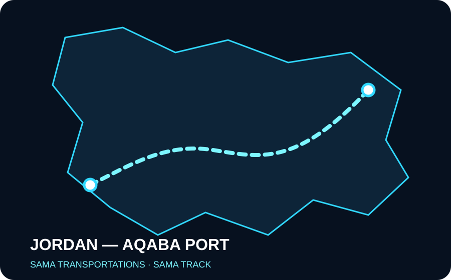

↗
Karayolu Taşımacılığı
Planlı sevkiyat, saha koordinasyonu ve güvenilir teslimat.
Karayolu taşımacılığından liman operasyonlarına, SAMA Transportations yükünüzü planlı, şeffaf ve takip edilebilir bir operasyonla hedefe ulaştırır.

Sahadaki taşıma operasyonunu planlama, koordinasyon ve dijital takip ile tek bir yapıda birleştiriyoruz.
Planlı sevkiyat, saha koordinasyonu ve güvenilir teslimat.
Liman çıkışından teslimat noktasına uçtan uca yönetim.
SAMA TRACK ile sevkiyat ve operasyon kayıtlarını takip edin.
Araç, sürücü, rota ve saha süreçlerinin koordinasyonu.
Haritalar doğrudan sayfaya yerleştirildi. JavaScript ile harita yükleme yok; bu bölüm statik ve hızlı çalışır.



Modern lojistik yaklaşımımız, saha deneyimimiz ve dijital operasyon altyapımızla düzenli, takip edilebilir ve sürdürülebilir taşıma hizmetleri sunuyoruz.
Taşımacılık ve lojistik ihtiyaçlarınız için SAMA Transportations ekibiyle iletişime geçin.